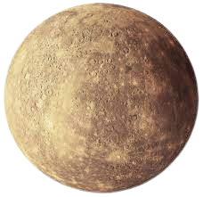

Welcome to Mercury

Mercury is the first planet from the Sun and the smallest in the Solar System. It is a terrestrial planet with a heavily cratered surface due to overlapping impact events. These features are well preserved since the planet has no geological activity and an extremely tenuous atmosphere called an exosphere Mercury is bright when we can see it from Earth. It has an apparent magnitude ranging from −2.0 to 5.5. It cannot be seen easily because it is usually too close to the Sun Mercury looks like Earth's Moon. It has many craters and smooth plains. It has no moons and little atmosphere as we know it. However, Mercury does have an extremely thin atmosphere, known as an exosphere.[11] Mercury has a large iron core. Because of this Mercury has a magnetic field about 1% as strong as that of the Earth.[15] It is a very dense planet because its core is large. Even though Mercury is the closest planet to the Sun, it is not the hottest. This is because it has no greenhouse effect. The heat that the Sun gives it, quickly escapes into space. والدليل على وجود كوكب عطارد قوله تعالى: ( فَلا أُقْسِمُ بِالْخُنَّسِ * الْجَوَارِ الْكُنَّسِ ) مادل على الايه: اختلف أهل التأويل في (الخُنَّس * الْجَوَارِِ الكنَّسِ) فقال بعضهم: هي النجوم الدراريّ الخمسة تخنِس في مجراها فترجع وتكنس، فتستتر في بيوتها كما تكنس الظباء في المغار، والنجوم الخمسة: بَهْرام وزُحَل، وعُطارد، والزُّهَرَة، والمُشْتَرِي. * ذكر من قال ذلك: حدثنا هناد، قال: ثنا أبو الأحوص، عن سماك، عن خالد بن عُرعُرة، أن رجلا قام إلى عليّ رضي الله عنه ، فقال: ما( الْجَوَارِ الْكُنَّسِ ) ؟ قال: هي الكواكب. حدثنا ابن المثنى، قال: ثنا محمد بن جعفر، قال: ثنا شعبة، عن سماك بن حرب، قال: سمعت خالد بن عُرعرة، قال: سمعت عليا عليه السلام ، وسُئل عن ( لا أُقْسِمُ بالخُنَّسِ * الجَوَارِ الكُنَّسِ ) قال: هي النجوم تخنس بالنهار، وتكنس بالليل . حدثنا أبو كُرَيب، قال: ثنا وكيع، عن سماك، عن خالد بن عرعرة، عن عليّ رضي الله عنه ، قال: النجوم . حدثنا ابن حميد، قال: ثنا مهران، عن سفيان، عن أبي إسحاق، عن رجل من مُراد، عن عليّ أنه قال: هل تدرون ما الخنس؟ هي النجوم تجري بالليل، وتخنس بالنهار . حدثني يونس، قال: أخبرنا ابن وهب، قال: ثني جرير بن حازم، أنه سمع الحسن يسئل، فقيل: يا أبا سعيد ما الجواري الكُنَّس؟ قال: النجوم . حدثنا محمد بن بشار، قال: ثنا هوذة بن خليفة، قال: ثنا عوف، عن بكر بن عبد الله، في قوله: ( فَلا أُقْسِمُ بِالْخُنَّسِ * الْجَوَارِ الْكُنَّسِ ) قال: هي النجوم الدراريّ، التي تجري تستقبل المشرق . حدثني أبو السائب، قال: ثنا أبو معاوية، عن الأعمش، عن مجاهد، قال: هي النجوم . حدثنا أبو كُرَيب، قال: ثنا وكيع، عن سفيان، عن أبي إسحاق، عن رجل من مراد، عن عليّ بن أبي طالب رضي الله عنه ( فَلا أُقْسِمُ بِالْخُنَّسِ * الْجَوَارِ الْكُنَّسِ ) قال: يعني النجوم تكنس بالنهار، وتبدو بالليل . حدثنا بشر، قال: ثنا يزيد، قال: ثنا سعيد، عن قتادة: قوله: ( فَلا أُقْسِمُ بِالْخُنَّسِ * الْجَوَارِ الْكُنَّسِ ) قال: هي النجوم تبدو بالليل وتخنس بالنهار . حدثنا ابن عبد الأعلى، قال: ثنا ابن ثور، عن معمر، عن الحسن في قوله: ( فَلا أُقْسِمُ بِالْخُنَّسِ * الْجَوَارِ الْكُنَّسِ ) قال: هي النجوم تخنس بالنهار، والجوار الكنس: سيرهنّ إذا غبن . حدثني يونس، قال: أخبرنا ابن وهب، قال: قال ابن زيد، في قوله: ( أُقْسِمُ بِالْخُنَّسِ * الْجَوَارِ الْكُنَّسِ ) قال: الخنس والجواري الكنس: النجوم الخنس، إنها تخنس تتأخر عن مطلعها، هي تتأخر كلّ عام لها في كلّ عام تأخر عن تعجيل ذلك الطلوع تخنس عنه. والكنس: تكنس بالنهار فلا تُرَى. قال: والجواري تجري بعد، فهذا الخنس الجواري الكنس . وقال آخرون: هي بقر الوحش التي تكنس في كناسها. * ذكر من قال ذلك: حدثنا الحسن بن عرفة قال: ثنا هشيم بن بشير، عن زكريا بن أبي زائدة، عن أبي إسحاق السَّبيعيّ، عن أبي ميسرة، عن عبد الله بن مسعود أنه قال لأبي ميسرة: ما الجواري الكنس؟ قال: فقال بقر الوحش قال: فقال: وأنا أرى ذلك . حدثنا ابن بشار، قال: ثنا يحيى، عن سفيان، عن أبي إسحاق، عن أبي ميسرة، عن عبد الله، في قوله: ( الْجَوَارِ الْكُنَّسِ ) : قال: بقر الوحش . حدثنا ابن حميد، قال: ثنا مهران، عن سفيان، عن أبي إسحاق، عن عمرو ابن شرحبيل، قال: قال ابن مسعود: يا عمرو ما الجواري الكنس، أو ما تراها؟ قال عمرو: أراها البقر، قال عبد الله: وأنا أراها البقر . حدثنا أبو كُرَيب، قال: ثنا وكيع، عن سفيان، عن أبي إسحاق، عن أبي ميسرة قال: سألت عنها عبد الله، فذكر نحوه. حدثني يونس، قال: أخبرنا ابن وهب، قال: ثني جرير بن حازم، قال: ثني الحجاج بن المنذر، قال: سألت أبا الشَعثاء جابر بن زيد عن الجواري الكنس، قال: هي البقر إذا كَنَست كوانسها . قال يونس: قال لي عبد الله بن وهب: هي البقر إذا فرّت من الذئاب، فذلك الذي أراد بقوله: كنست كوانسها . حدثني يونس، قال: أخبرنا ابن وهب، قال: قال جرير، وحدثني الصلت بن راشد، عن مجاهد مثل ذلك